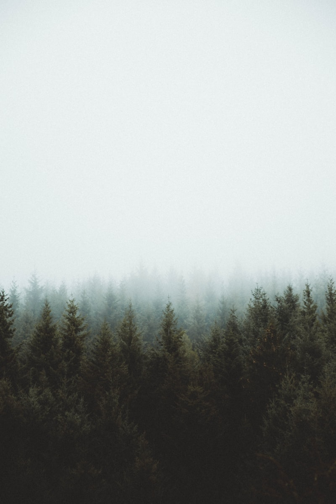

Journey
Places I've lived
Ages 0 — 5
Aichi, Japan
🗾
Where it all began — surrounded by family, tradition, and the warm countryside of central Japan.
Ages 5 — 9
🇺🇸
Ann Arbor, Michigan

First big move abroad. Elementary school in a vibrant college town, where I first discovered tennis.
Ages 9 — 11
Aichi, Japan
🗾
Back to my roots for a couple of formative years — reconnecting with culture and language.
Ages 11 — 16
🇺🇸
Ann Arbor, Michigan
Middle school and early high school — growing up in the midwest, building discipline on and off the court.
Ages 16 — 18
🌉
Silicon Valley, California

Late high school near innovation central — an eye-opening experience among startups and tech culture.
Age 18 — Present
Tokyo, Japan
🗼

Back in Japan and calling Tokyo home — studying, working, and building a life in one of world's most dynamic cities.